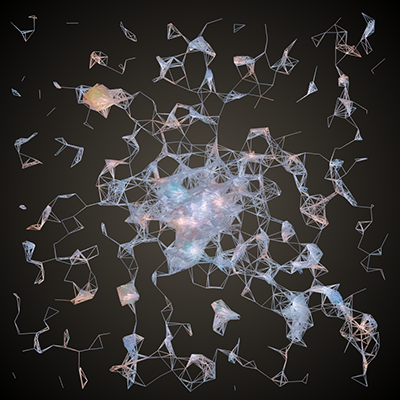
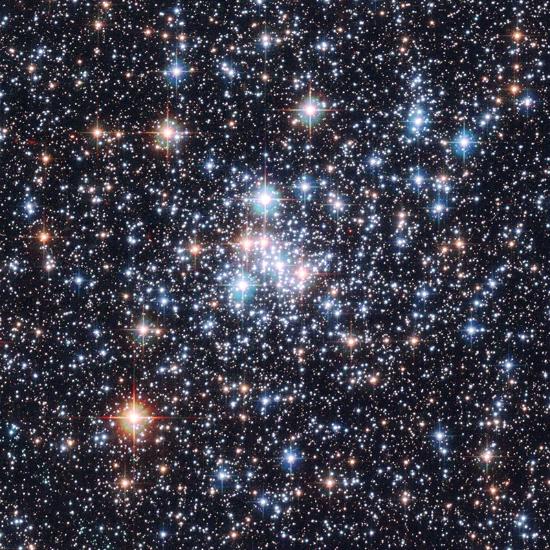
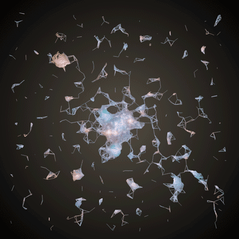

메시 생성하기
이미지로부터 메시 생성하기 기초편
*이 분서는 영문을 한글로 번역한 문서입니다. 최대한 의미가 제대로 전달되도록 노력하였습니다. 어색한 부분은 의역한 부분도 있습니다만.. 오류나 지적사항이 있으시면 메일로 연락주시기 바랍니다. icq4ever@gmail.com
본 튜토리얼은 희망컨데 기본 튜토리얼(오픈프레임웍스 세팅, 변수사용, 루프 생성 등등)은 익숙하면서 3D를 다루고 싶은 분들을 대상으로 합니다. 좀 폼내는 것처럼 보일지 모르겠지만, 이 가이드의 로직과 코드를 통해 아래의 이미지를 이용하여(참고로 이 이미지는 허블갤러리에서 가져왔습니다.):

아래와 같이 만들것입니다:

본 튜토리얼은 네 섹션으로 나뉘어집니다:
- 기초 : ofMesh 다루기
- 점
- 색
- 선
- 인덱스
- 제너러티브 메쉬 : 이미지를 사용하여 메시 생성하기
- 이미지 불러오기
- 픽셀에서 메시 생성하기
- ofEasyCam을 이용하여 메시 둘러보기
- 조작하기 : 메쉬를 수정하는 효과 추가하기
- 진동 추가하기
- 정점에 궤도를 추가하기
- 상호작용하는 확대효과 생성
- 다음 단계
기초 : ofMesh다루기
mesh는 다양한 방법으로 연결이 가능한 정점들(Vertices. Vertex의 복수형으로, 정점:Vertex란 3D 공간의 점을 의미합니다)의 집합입니다. 이러한 정점들은 그리기 모드(primitive)를 통해 연결되어 모양을 이룹니다. 이러한 그리기 모드들은 메시를 만들때 조합되는 가장 작은 빌딩 블록들 같은 것이라 할 수 있습니다. 이러한 그리기 모드는 몇가지의 다른 종류가 있습니다: 정점들을 연결하지 않고 점만 찍는다. 정점의 쌍을 선택하여 그것들끼리 선을 그린다. * 세개 혹은 그 이상의 정점들을 연결하여 삼각형, 혹은 사각형(다각형)을 그린다.
좀 더 확실한 이해를 위해, 아래의 메쉬를 살펴보시기 바랍니다. 주황색 점들이 바로 정점들입니다. 정점들은 회색으로 칠해진 세개의 점을 세트로 하는 '삼각형 그리기모드'로 연결되어 있습니다. 좀더 자세한 정보를 원하신다면, 오픈지엘 튜토리얼을 살펴보시기 바랍니다.

자 이제부터터 점과 선을 그리기 모드로 사용하는것에 집중해 보겠습니다. 화면에 뭔가를 그려보도록 하지요. 메쉬를 생성할때는 반드시 아래와 같은 절차를 거쳐 코드를 작성해야합니다:
- ofMesh변수를 선언합니다. 여기서는 mesh라고 선언하도록 하죠.
- mesh.setMode()함수를 사용하여, 메쉬가 사용할 정점들을 연결할때 사용할 그리기모드를 지정합니다. (점, 선, 기타 등등..) 우리는 그리기 모드로 점을 사용할 것이므로, OF_PRIMIRIVE_POINTS라고 지정해주어야 합니다.
- mesh.addVertex()를 사용하여 정점들을 추가해줍니다. 정점은 ofVec3f형이므로, 이 클래스를 사용해본적이 없다면, 도큐먼트 페이지의 예제를 참고하시길 바랍니다.
- mesh.draw()를 사용하여 메쉬를 그립니다.
자 이제 코드를 직접 작성해보죠!
메쉬 변수를 헤더파일(.h)에 추가합니다:
ofMesh mesh;
소스파일(.cpp)파일에서 setup()과 draw() 함수에 아래 코드들을 추가해줍니다.:
void testApp::setup() {
mesh.setMode(OF_PRIMITIVE_POINTS);
ofVec3f top(100.0, 50.0, 0.0);
ofVec3f left(50.0, 150.0, 0.0);
ofVec3f right(150.0, 150.0, 0.0);
mesh.addVertex(top);
mesh.addVertex(left);
mesh.addVertex(right);
}
void testApp::draw() {
ofBackground(0);
mesh.draw();
}
컴파일을 하고 실행하면, 검은 바탕위에 삼각형의 형태로 위치한 세 흰 점을 볼 수 있습니다.

흰색이 좀 지루한가요? setup을 수정하여 다른 색을 추가해보죠:
void testApp::setup() {
mesh.setMode(OF_PRIMITIVE_POINTS);
mesh.enableColors();
ofVec3f top(100.0, 50.0, 0.0);
ofVec3f left(50.0, 150.0, 0.0);
ofVec3f right(150.0, 150.0, 0.0);
mesh.addVertex(top);
mesh.addColor(ofFloatColor(1.0, 0.0, 0.0));
mesh.addVertex(left);
mesh.addColor(ofFloatColor(0.0, 1.0, 0.0));
mesh.addVertex(right);
mesh.addColor(ofFloatColor(1.0, 1.0, 0.0));
}
먼저 mesh.enableColors()를 이용하여 색을 사용할수 있게 합니다. 기본적으로 활성화 되어있긴 하지만, 이 코드를 작성하는것은 좋은 연습이 될것입니다. 그리고 나서 mesh.addColor()를 사용하여 색을 추가합니다. 색은 ofFloatColor를 사용하여 지정하는데 이것은 ofColor과 비슷하지만 빨강, 파랑, 녹색, 투명도의 범위가 0.0에서 1.0사이의 float(부동소수점)으로 표현한다는 점에서 차이가 있습니다. (원한다면 ofColor로 사용이 가능합니다만, 반드시 ofFloatColor를 사용해야합니다.) 첫 번째로 추가한 색은 첫번째 정점에, 두번째 추가한 색은 두번째 정점에 적용됩니다.
점이 좀 지루하죠? 선을 연결해볼 시간입니다. 그리기 모드를 선으로 바꿔야 합니다만, 선 모드에는 세가지 다른 옵션이 있습니다. 각각의 옵션을 setup함수의 첫번째 라인에 아래의 코드를 사용하여 직접 적용해보시기 바랍니다:
mesh.setMode(OF_PRIMITIVE_LINES);
mesh.setMode(OF_PRIMITIVE_LINE_STRIP);
mesh.setMode(OF_PRIMITIVE_LINE_LOOP);

각각의 모드들은 정점으로부터 다른 방식으로 선을 생성합니다: OF_PRIMITIVE_LINE는 각각의 정점들을 쌍으로 하여 독립적으로 선을 그립니다. 만약 V1, V2, V3, V4, ... 와 같은 정점들을 갖고 있다면, V1은 V2로, V3은 V4로 연결됩니다. OF_PRIMITIVE_LINE_STRIP는 각각의 정점들을 쌍으로 하여 연속적으로 선들을 그립니다. V1은 V2로, V2는 V3으로 연결되는 식입니다. * OF_PRIMITIVE_LINE_LOOP는 연속적으로 선들을 그리며, 처음과 끝의 정점까지도 연결해줍니다.
OF_PRIMITIVE_LINE_LOOP 만이 완벽한 삼각형을 그려냅니다. 만약 OF_PRIMITIVE_LINE을 이용하여 같은 모양을 그려내기 위해서는 아래와 같이 작성하여야 합니다:
mesh.addVertex(top);
mesh.addVertex(left);
mesh.addVertex(left);
mesh.addVertex(right);
mesh.addVertex(right);
mesh.addVertex(top);
굳이 정점들을 중복하여 그려보고 싶다구요? 그렇다면 이렇게 해보세요:
void testApp::setup() {
mesh.setMode(OF_PRIMITIVE_LINES);
mesh.enableColors();
mesh.enableIndices();
ofVec3f top(100.0, 50.0, 0.0);
ofVec3f left(50.0, 150.0, 0.0);
ofVec3f right(150.0, 150.0, 0.0);
mesh.addVertex(top);
mesh.addColor(ofFloatColor(1.0, 0.0, 0.0));
mesh.addVertex(left);
mesh.addColor(ofFloatColor(0.0, 1.0, 0.0));
mesh.addVertex(right);
mesh.addColor(ofFloatColor(1.0, 1.0, 0.0));
mesh.addIndex(0);
mesh.addIndex(1);
mesh.addIndex(1);
mesh.addIndex(2);
mesh.addIndex(2);
mesh.addIndex(0);
}
indices(index의 복수형. 인덱스들)인덱스들은 추상화된 레이어를 추가합니다. 메쉬에 추가할 각각의 정점은 큰 고전적인 배열의 끝에 고정됩니다. 이 말은 즉 각각의 정점은 자신의 위치를 식별할수 있는 유일한 숫자를 갖는다는 뜻입니다. 0, 1, 2 이런식으로 붙여집니다. 특정 정점을 지정하기 위해서는 그것의 인덱스 넘버를 사용하면 되는것이지요.
mesh.enableIndices()를 호출하면, 오픈프레임웍스는 비어있는 인덱스 배열을 생성합니다. 이후 addIndex()를 호출하면, 배열의 끝에 값을 하나 추가하게 됩니다. 메쉬가 화면상에 그려질때, 오픈프레임웍스는 정점배열이 아닌, 인덱스 배열에 접근하여 루프를 돌며 그리기모드를 어떻게 생성할것인지를 결졍하게 됩니다.
따라서 OF_PRIMITIVE_LINE모드이고, 인덱스 배열이 (0, 1, 1, 2, 2, 0)이면, 0번째 정점과 1번째 정점이 연결되며, 1번째 정점과 2번째 정점이 연결되고, 2번째 정점과 0번째 정점이 연결됩니다. 고작 삼각형 하나를 그리는데 해줘야 하는 일이 뭐이리 많냐구요? 맞습니다. 하지만 이러한 인덱스의 개념은 상당히 강력하고 유용합니다.
주의해야 할 점이 하나 더 있습니다. 바로 선의 색입니다. 이것은 그래픽카드에서 벌어지는 일종의 마법과 같은 일입니다. 점 A가 빨간색이고 점 B가 파란색이라고 한 뒤에 A와 B를 선으로 연결해봅시다. 그러면, 그래픽카드는 두 색의 중간값을 자동으로 계산하여 선을 그려냅니다.
이번 섹션을 전부 읽어본 것에 대한 보상입니다:

네 알아요. 대단한 보상은 아닙니다. 하지만 이것은 OF_PRIMITIVE_LINES를 사용하여 그려낼 수 있습니다. 다른 두 모드로는 그려낼 수 없지요. 별도의 분리된 선들로 그려내야 합니다. 다음 섹션에서 이것의 장점들에 대해 알아볼 것입니다.
mesh.setMode(OF_PRIMITIVE_LINES);
mesh.enableColors();
mesh.enableIndices();
ofVec3f eyeLeftTop(50.0, 25.0, 0.0);
ofVec3f eyeLeftBottom(50.0, 50.0, 0.0);
ofVec3f eyeRightTop(100.0, 25.0, 0.0);
ofVec3f eyeRightBottom(100.0, 50.0, 0.0);
ofVec3f mouthLeft(50.0, 75.0, 0.0);
ofVec3f mouthMiddle(75.0, 100.0, 0.0);
ofVec3f mouthRight(100.0, 75.0, 0.0);
mesh.addVertex(eyeLeftTop);
mesh.addVertex(eyeLeftBottom);
mesh.addIndex(0);
mesh.addIndex(1);
mesh.addColor(ofFloatColor(0.0, 1.0, 1.0));
mesh.addColor(ofFloatColor(0.0, 1.0, 1.0));
mesh.addVertex(eyeRightTop);
mesh.addVertex(eyeRightBottom);
mesh.addIndex(2);
mesh.addIndex(3);
mesh.addColor(ofFloatColor(0.0, 1.0, 1.0));
mesh.addColor(ofFloatColor(0.0, 1.0, 1.0));
mesh.addVertex(mouthLeft);
mesh.addVertex(mouthMiddle);
mesh.addVertex(mouthRight);
mesh.addIndex(4);
mesh.addIndex(5);
mesh.addIndex(5);
mesh.addIndex(6);
mesh.addColor(ofFloatColor(0.0, 1.0, 0.0));
mesh.addColor(ofFloatColor(0.0, 1.0, 0.0));
mesh.addColor(ofFloatColor(0.0, 1.0, 0.0));
제너러티브 메쉬 : 이미지를 사용하여 메시 생성하기
메쉬! 이제 여러분은 '재너러티브한'메쉬를 그리는 기본적인 방법을 알고 있습니다. 남은 것은 어떠한 데이터에 어떠한 규칙을 사용하여 메쉬를 생성할 것이냐 입니다. 이건 단지 어떠한 데이터에 적용되는 규칙들에서부터 생성되는 메쉬의 타입일 뿐입니다.
따라서 , 우리는 데이터와 규칙이 필요합니다. 그렇다면 허블망원경에서 '데이터'를 뽑아볼까요?:

HubbleMesh라는 이름으로 새 오픈프레임웍스 프로젝트를 생성하고, HubbleMesh/bin/data 디렉토리에 위 이미지를 'starts.png'로 저장합시다.
자 이제 알록달록한 픽셀뭉치를 갖게 되었습니다. 하지만 저 픽셀들에서 메쉬로 변한하기 위해 어떠한 규칙들을 사용해야할까요? 일단 점을 그리는것으로 시작해 선을 그려볼까요? 우리의 이미지에는 엄청난 별들이 있으니, 저 별들이 위치한 곳에 정점을 생성해봅시다. 그리고 나면, 인접한 정점들과 선을 그려 일종의 거미줄을 생성할 수 있을 것입니다.
자 우선적으로, 이미지를 불러와봅시다. main.cpp파일로 가서 창 크기를 다운받은 이미지의 크기와 동일하도록 수정해봅시다:
ofSetupOpenGL(800,800,OF_WINDOW);
그리고 헤더파일(testApp.h)로 가서 아래 코드를 추가합니다:
ofImage image;
그리고 마지막으로, 소스파일(testApp.cpp)에 아래와 같이 코드를 추가합니다:
void testApp::setup(){
image.loadImage("stars.png");
}
void testApp::draw(){
image.draw(0,0);
}
현재 ofImage만다루는 튜토리얼은 아직 없습니다. 따라서 혹시 이미지를 가지고 어떤것을 더 할 수 있을지 궁금하신 분들은 Processing 사용자들을 위한 openFrameworks이나 004 presentation의 튜토리얼을 참고해주시기 바랍니다.
이제 남은것은 loadImage()함수를 이용하여 이미지를 불러와, 그것을 draw(0,0)함수를 이용해 화면의 좌측 상단에 그려는것만 남았습니다.
훌륭하군요! 이미지가 로드되었습니다. 자 이제, 우리는 정점들을 사용하여 메쉬를 생성해야합니다. 이미지에서 별들의 위치에 정점들을 생성하고 싶다면, 이미지의 픽셀들을 훑어 그중에 '밝은'색들을 찾아서 수행하면 됩니다. 이렇게 하려면, 이미지의 픽셀 컬러 정보들에 접근할 필요가 있습니다. 바로 getColor(x, y)함수입니다. 이미지의 픽셀을 따라 루프를 돌며 threshold를 적용합니다. 이렇게 하면 다른 픽셀보다 밝은색이 있는 픽셀의 위치에만 정점을 추가할 수 있게 되는것입니다.
testApp.h에 메쉬를 추가합니다:
ofMesh mesh;
그리고 아래 코드를 testApp.cpp에 추가합니다:
void testApp::setup(){
image.loadImage("stars.png");
mesh.setMode(OF_PRIMITIVE_POINTS);
float intensityThreshold = 150.0;
int w = image.getWidth();
int h = image.getHeight();
for (int x=0; x<w; ++x) {
for (int y=0; y<h; ++y) {
ofColor c = image.getColor(x, y);
float intensity = c.getLightness();
if (intensity >= intensityThreshold) {
ofVec3f pos(x, y, 0.0);
mesh.addVertex(pos);
mesh.addColor(c);
}
}
}
}
void testApp::draw(){
ofBackground(0,0,255);
mesh.draw();
}

위 코드에서는, 그리기모드로 점을 사용하여 메쉬를 생성했습니다. 그리고 나서 이미지의 각 픽셀을 반복하면서 (getWidth() 와 getHeight()를 사용하여) getLightness()을 사용해 각 픽셀의 밝기를 체크합니다. 만약 밝기가 지정한 threshold를 넘어서면, 정점의 위치를 해당 픽셀의 위치로, 정점의 색을 해당픽셀의 색으로 지정해 생성합니다. 마지막으로 파란색 배경위에 메쉬를 그렸기 때문에 이미지의 어떤 픽셀들이 정점들로 쓰였는지 볼 수 있게 되었습니다. 정점의 갯수를 늘리거나 줄이기 위해서는 threshold값을 수정하면 됩니다.
이번엔 ofBackgroundGradient를 이용하여 배경색을 좀더 어울리게 바꿔봅시다...
void testApp::draw(){
ofColor centerColor = ofColor(85, 78, 68);
ofColor edgeColor(0, 0, 0);
ofBackgroundGradient(centerColor, edgeColor, OF_GRADIENT_CIRCULAR);
mesh.draw();
}
이제 선만 그리면 됩니다. 선만!
메쉬에는 많은 정점들을 갖고 있습니다. 원한다면 getNumVertices()함수를 이용해서 몇개인지 확인할 수 있습니다:
cout << mesh.getNumVertices() << endl; // 아마 64,000 개 이상일 것입니다.
만약에 저 64,000개의 정점들을 인접한 다른 정점들끼리 연결하는것을 루프를 돌면서 수행한다고 하면, 엄청난 시간이 소요될 겁니다. 정점 갯수를 줄여야 하겠죠? 가장 좋은 방법은 처리할 이미지의 크기를 줄이는 것입니다:
image.loadImage("stars.png");
image.resize(200, 200);
자. 이제 이미지 픽셀들은 실행되는 프로그램의 윈도우 사이즈와 동일하지 않으므로, loop내의 pos변수를 사용해 조절해주어야 합니다:
if (c.getLightness() > intensityThreshold) {
// 이미지를 4배 줄였으므로, 메쉬가 프로그램 윈도우를 꽉 채우게 하려면
// 그만큼 픽셀들의 위치를 4배 키워줘야 합니다.
ofVec3f pos(4*x, 4*y, 0.0);
mesh.addVertex(pos);
mesh.addColor(c);
}
정점들의 갯수가 2000개 정도로 적절하게 줄어들엇습니다. 이제 정점들을 선으로 연결할 시간입니다. 서로 인접한 정점들끼리만 연결할려면, 가능한 정점끼리의 짝을 모두 체크하고 거리를 구한 뒤, 그 거리가 일정한 값보다 작을때만 연결하면 됩니다.
// 그리기모드를 선으로 변경하는것을 잊지 마세요!
mesh.setMode(OF_PRIMITIVE_LINES);
// ...
// 필요한 부분만 보여주기 위해 생략했으므로
// 삭제하지는 마세요!
// 선을 그려봅시다!
float connectionDistance = 30;
int numVerts = mesh.getNumVertices();
for (int a=0; a<numVerts; ++a) {
ofVec3f verta = mesh.getVertex(a);
for (int b=a+1; b<numVerts; ++b) {
ofVec3f vertb = mesh.getVertex(b);
float distance = verta.distance(vertb);
if (distance <= connectionDistance) {
mesh.addIndex(a);
mesh.addIndex(b);
}
}
}
결과는 아마 아래 그림과 같을것입니다.(혹시 실행시 여러분의 컴퓨터에서 너무 많은 시간이 걸린다면, intensityThreshold값을 좀 키워보시길 바랍니다. 정점의 갯수를 더 줄여줄 것입니다.):

코드를 다시한번 더 정리해볼까요?:
- 모든 정점들의 쌍을 얻어와야 합니다. 메쉬의 i 번째 정점의 위치를 얻기 위해 getVertex()를 사용합니다. 그리고 나면 쌍을 위한 두개의 정점을 사용할 수 있겠죠? 여기서 왜 두번째 루프가 b=a+1인지 궁금하신 분들도 있을겁니다. 선을 만들때엔 정점들의 순서는 중요하지 않으므로, 정점 자신만 제외하면 되는것입니다.
- 자 이제 정점들간의 거리를 구해야 합니다. ofVec3f는 거리계산을 해주는 함수 distance()를 제공합니다.
- 만약 정점들이 connectionDistance에 정의된 값보다 작으면, 두 정점을 선으로 연결하기 위해 선을 추가해주면 됩니다. 선을 추가하기 위해 메쉬의 인덱스 어레이 중 a와 b를 사용하면 됩니다.
쨔잔! 제너러티브 메쉬입니다. 3D로 보이기 위해 두가지 처리를 더해줘봅시다. 첫번째로 z좌표를 변경하기 위해 색의 채도를 사용할 수 있습니다.
if (intensity >= intensityThreshold) {
float saturation = c.getSaturation();
float z = ofMap(saturation, 0, 255, -100, 100);
ofVec3f pos(4*x, 4*y, z);
mesh.addVertex(pos);
mesh.addColor(c);
}
위 코드는 ofMap()함수를 이용하여 채도가 높은 색은 z의 +방향으로, 채도가 낮은 색은 z축의 - 방향으로 변경해줍니다. ofMap함수는 값을 하나의 범위에서(여기서는 0 에서 255) 새로운 값의 범위로(여기서는 -100 에서 100) 변경해줍니다.
흠.. 코드를 변경했는데 많이 바뀐거 같진 않죠? 자, 이제 마지막으로 추가할 처리가 남아있습니다: 바로 카메라를 추가하는 것입니다.
아래 코드를 헤더파일에 추가하세요:
ofEasyCam easyCam;
그리고나서 draw함수를 아래와 같이 수정해보세요:
void testApp::draw(){
ofColor centerColor = ofColor(85, 78, 68);
ofColor edgeColor(0, 0, 0);
ofBackgroundGradient(centerColor, edgeColor, OF_GRADIENT_CIRCULAR);
easyCam.begin();
ofPushMatrix();
ofTranslate(-ofGetWidth()/2, -ofGetHeight()/2);
mesh.draw();
ofPopMatrix();
easyCam.end();
}
ofEasyCam은 우리가 생성한 메쉬를 손쉽게 3차원으로 보여주게 해줍니다. opengl tutorial의 ofPushMatrix(), ofPopMatrix() and ofTranslate()를 읽어보시길 바랍니다. 위 코드는 카메라의 시점을 메쉬의 중심에 맞추도록 합니다. 실행된 프로그램의 창에서 왼쪽버튼을 드래그를 하여 회전을 시켜보세요! 우측버튼을 드래그하면 확대할수 있습니다!

조작하기 : 메쉬를 수정하는 효과 추가하기
우리는 이제 우리만의 그물 메쉬를 갖고 있습니다. 이제 이 메쉬에 움직임을 줄 몇가지 규칙들을 추가해봅시다.
진동 추가하기
메쉬는 현미경에서 관찰할 수 있는 미생물과 닮았습니다. 그렇다면 이러한 '유기적인' 움직임을 정점들에 추가해보도록 하죠. 여러분의 컴퓨터상에서의 움직임은 아래 gif이미지에서 보이는 것보다 훨씬 빠를겠지만(웹브라우저에서는 gif의 최대 프레임이 정해져있기 떄문입니다), 적어도 어떤 움직임을 추가할지에 대한 힌트는 드릴수 있겠네요:
각각의 프레임에서, 우리는 각각의 정점들을 작은, 랜덤한 값을 주어 움직이게 할겁니다. 이를 위해 ofRandom()을 사용하지 않고, Perlin 노이즈를 생성해주는 ofSignedNoise()를 사용할 것입니다. Daniel Shiffman이 제공하는 온라인 튜토리얼 1.6 Perlin Noise (A Smoother Approach) 섹션을 참고해주시기 바랍니다. Perlin 노이즈는 시간경과에 따라 스무스하게 변하는 랜덤값을 제공해줍니다. figure 1.5(연속적인 노이즈)와 figure 1.6(연속적인 랜덤값)를 살펴보면, 일반적인 랜덤값과 perlin n노이즈가 어떤 차이를 보이는지 이해할 수 있을것입니다.
{kind=link}
{kind=link}
ofRandom()을 사용하면, 값의 범위를 지정할수 있고, 지정한 범위내에서 무작위한 값을 리턴해줍니다. 이 함수를 여러번 호출하면, (거의, 아주 거의) 매번 새로운 값들을 얻을 수 있습니다. Perlin노이즈는 약간 다릅니다. ofSignedNoise()는 항상 -1.0에서 0.1사이의 값을 리턴하지만, 반드시 항상 함수의 입력값을 전달해주어야 합니다. 그래프 용지에 ofSignedNoise()를 사용해 구불구불한 곡선을 그린다 상상해보세요. 여러분은 좌표값으로 x값을 전달할것이고, 함수는 그에 해당하는 y값을 리턴할것입니다. 만약 ofSignedNoise(3.0)을 여러번 호출하면, 항상 같은 값을 얻을 수 있습니다.
움직임을 생성하기 위해 Perlin 노이즈를 사용할때는, 일반적으로 현재의 시간을 입력값으로 전달합니다(앞서 설명했던 그래프에서의 x값). 따라서, 정점의 위치를 변경하기 위해서, 우리는 ofSignedNoise에 시간을 전달할 것입니다(ofGetElapsedTimef()함수를 이용해서 말이죠). 이렇게 하면 결과의 값은 시간이 경과할수록 스무스한 값을 얻을수 있습니다. 주의할 점은, 우리는 각각의 정점들이 독립적으로 움직이도록 할것이라는 겁니다. 만약 모든 정점들에 대해 ofSignedNoise에 같은 시간값을 전달해 주게 되면, 모든 정점들이 똑같이 움직이게 될것입니다. 즉 정점 1을 움직였다면, 정점2는 다른 시간을 사용해야 한다는 것이죠.(정점 3, 4 또한 마찬가지입니다.)
코드로 넘어가봅시다. 헤더파일에 아래 코드를 추가해주세요:
vector<ofVec3f> offsets;
그리고 setup함수에 아래의 두 줄을 추가해주세요:
// Add this line:
ofSetFrameRate(60);
// Some lines of code omitted for clarity, you should still
// keep them in your local version
for (int x=0; x<w; ++x) {
for (int y=0; y<h; ++y) {
ofColor c = image.getColor(x, y);
float intensity = c.getLightness();
if (intensity >= intensityThreshold) {
float saturation = c.getSaturation();
float z = ofMap(saturation, 0, 255, -100, 100);
ofVec3f pos(4*x, 4*y, z);
mesh.addVertex(pos);
mesh.addColor(c);
// 아래를 추가하세요:
// 3개의 랜덤한 값으로 ofVec3f를 생성합니다
// 이 값들은 각각의 정점들이 x, y, z축 방향으로 독립적인 움직임을 할수 있게 합니다.
offsets.push_back(ofVec3f(ofRandom(0,100000), ofRandom(0,100000), ofRandom(0,100000)));
}
}
}
마지막으로, 아래의 코드들을 update함수에 추가해줍니다:
int numVerts = mesh.getNumVertices();
for (int i=0; i<numVerts; ++i) {
ofVec3f vert = mesh.getVertex(i);
float time = ofGetElapsedTimef();
float timeScale = 5.0;
float displacementScale = 0.75;
ofVec3f timeOffsets = offsets[i];
// Perlin 노이즈가 몇가지 파라미터를 사용하는 일반적인 디자인 패턴입니다.
// ofSignedNoise(time*timeScale+timeOffset)*displacementScale
// ofSignedNoise(time) 은 주어진 시간에 따라 노이즈 값을 스무스하게 변경하여 제공해줍니다.
// ofSignedNoise(time*timeScale)는 노이즈를 얼마나 스무스하게 조절할지를 가능케 해줍니다.(timeScale이 작을수록 더 스무스해집니다)
// ofSignedNoise(time+timeOffset) allows us to use the same Perlin noise function to control multiple things and have them look as if they are moving independently
// ofSignedNoise(time)*displacementScale 는 노이즈의 범위를 [-1, 1]에서 원하는 값으로 변경할수 있도록 해줍니다.
// 위 파라메터들을 조합하면, 여러분이 원하는 노이즈를 자유자재로 생성할 수 있습니다.
vert.x += (ofSignedNoise(time*timeScale+timeOffsets.x)) * displacementScale;
vert.y += (ofSignedNoise(time*timeScale+timeOffsets.y)) * displacementScale;
vert.z += (ofSignedNoise(time*timeScale+timeOffsets.z)) * displacementScale;
mesh.setVertex(i, vert);
}
setup에서, 우리는 두가지를 추가했습니다:
- ofSetFrameRate(60)을 사용하여, 프로그램이 최대 60프레임으로 동작하게 하였습니다. 없어도 상관없지만, 시간을 사용할때는 상당히 유용합니다.
- offsets이라는 변수를 생성했습니다. 이것은 ofVec3f들의 벡터로써, 랜덤한 값을 갖습니다. 이 값들은 각각의 정점들이 랜덤한 x, y, z방향으로 다른 정점에 대해 독립적으로 움직일 수 있도록 해줍니다.
그리고 update에서는:
- 메쉬를 이용해 정점의 위치를 얻어옵니다. getVertex()를 이용했고, 그 값을 vert라는 변수에 저장합니다.
- 몇가지의 파라메터와 함께 ofSignedNoise()를 이용해 ver의 x, y, z를 변경했습니다.
- 정점의 위치를 mesh.setVertex()를 사용하여 업데이트 해주었습니다.
좋아요! 우글거리는 메쉬가 완성되었습니다.
정점에 궤도를 추가하기
다음으로, 우리는 소용돌이치는 움직임을 추가할 수 있습니다. 원래 별들이 이렇게 움직이니까 적절한것 같네요.

이러한 궤도를 도는 움직임을 위해 우리는 삼각함수들을 사용할 것입니다. 꼼꼼한 분들이라면, Nature of Code의 chapter 3을 참고해보시기 바랍니다.
z축은 잊어버리고 x와 y 축만 생각해봅시다. 원모양의 궤도를 돌게 한다 생각해보면, 사인과 코사인을 사용하기 위해 각을 사용하면 됩니다. wiki 페이지의 극좌표를 읽어보세요. 특히 "극좌표와 데카르트 좌표 사이의 변환" 섹션을 살펴보시길 바랍니다.
만약 하나의 점이 중심에서 얼마나 떨어져있는지 알고 있다면, 우리는 공간상의 거리와 각을 사용하여 점의 위치를 정의할 수 있습니다(극좌표). 우리는 이 거리와 각을 이용하여 x, y값으로 변환할 수 있습니다(데카르트 좌표):
x = distance * cos(angle)
y = distance * sin(angle)
만약, 저 점이 원 안에서 회전한다면, 시간이 경과함에 따라 각을 증가시키면 됩니다. 수학적인것은 나중에 제쳐두고 말이죠.
자 우리의 대략적인 목표를 위해 우리가 해야할것은 아래와 같습니다:
- 정점들이 회전하는 중심이 될 중심점을 정의합니다.
- 정점들이 위치할 초기 극좌표들을 계산합니다.
- 각 정점에 대해 시간이 경과할때마다 극좌표의 각을 서서히 증가시킵니다.
헤더파일에 새 변수들을 추가해봅시다:
// 궤도움직임을 온오프 하기위해 사용될 변수들
ofMesh meshCopy;
bool orbiting;
float startOrbitTime;
// 각 정점들의 극좌표를 저장하기 위해 사용될 변수들
vector<float> distances;
vector<float> angles;
ofVec3f meshCentroid;
그리고 setup함수의 끝에 아래의 내용을 추가하세요:
// 메쉬를 위한 중심점을 계산해주어야 하는데
// ofMesh의 getCentroid()는 모든 정점들의 평균위치를 찾아줍니다.
// http://en.wikipedia.org/wiki/Centroid
meshCentroid = mesh.getCentroid();
// centroid를 알았으니, 중심점을 기준으로 각 정점의 극좌표를 알아내야 합니다. (거리와 각도)
// 이전에 두 점의 거리를 구하는 방법을 알아봤는데, 각은 어떻게 구할까요?
// atan2를 소개할 시간이군요.
// atan2(y, x)는 x와 y를 입력해주면 중심점(0, 0)에서의 각을 리턴해줍니다.
// 만약 (x1, y1)과 (x2, y2) 두 점의 각을 구하고 싶다면 atan2(y2-y1, x2-x1)을 호출하면 됩니다.
for (int i=0; i<numVerts; ++i) {
ofVec3f vert = mesh.getVertex(i);
float distance = vert.distance(meshCentroid);
float angle = atan2(vert.y-meshCentroid.y, vert.x-meshCentroid.x);
distances.push_back(distance);
angles.push_back(angle);
}
// 아래 변수들은 궤도움직임을 온오프하는데 사용합니다.
orbiting = false;
startOrbitTime = 0.0;
meshCopy = mesh; // 메쉬를 복사하여 저장해두므로써, 원래 상태를 다시 불러올 수 있습니다.
아래 코드를 update함수에 추가합니다:
if (orbiting) {
int numVerts = mesh.getNumVertices();
for (int i=0; i<numVerts; ++i) {
ofVec3f vert = mesh.getVertex(i);
float distance = distances[i];
float angle = angles[i];
float elapsedTime = ofGetElapsedTimef() - startOrbitTime;
// 정점들이 중심점에 가까워질수록 움직임이 빨라지도록 합니다.
float speed = ofMap(distance, 0, 200, 1, 0.25, true);
// 정점의 각속도를 얻기 위해, 연재의 시간과 초기 각속도를 사용
float rotatedAngle = elapsedTime * speed + angle;
// 계산된 거리는 메쉬의 centroid에 비율적이라는 것을 잊지 마세요
// 따라서 메쉬의 centroid에 x, y를 더해 실제 화면의 좌표로 옮겨주어야 합니다.
vert.x = distance * cos(rotatedAngle) + meshCentroid.x;
vert.y = distance * sin(rotatedAngle) + meshCentroid.y;
mesh.setVertex(i, vert);
}
}
아래코드를 keyPressed 함수에 추가합니다:
if (key == 'o') {
orbiting = !orbiting; // boolean변수를 토글링한다.
startOrbitTime = ofGetElapsedTimef();
mesh = meshCopy; // 원래의 메쉬로 복원
}
자 이제 'o'키를 눌러서 궤도움직임을 온오프할 수 있게 되었습니다.
프로그래밍 노트 : 변수 meshCopy는 원본 메쉬를 복사해 백업하는데 사용되었습니다. 나중에 필요할 때 불러올 수 있게 하기 위해서이죠. setup함수에서 아래와 같이 사용하였었습니다:
meshCopy = mesh;
우리는 mesh변수의 값을 복사하여 저장해둘 목적으로 meshCopy라는 변수를 별도로 생성하였습니다. ofMesh클래스는 deep copy(깊은 복사)라 불리우는 인스턴스를 제공하므로, 혹 mesh의 특정한 정점이 변경되었다 하더라도 meshCopy에서는 아무것도 변경되지 않습니다. 혹시 몰라 주의하시라는 차원에서 말씀드리지만, 모든 오브젝트들이 deep copy(깊은 복사)를 기본적으로 지원하는 것은 아닙니다.
확대효과
The last tweak we will add gives a bit of interactivity to the mesh. We will add a magnifying glass effect: 마지막으로 추가할 것은 메쉬에 약간의 상호작용을 추가하는것입니다. 우리는 확대효과를 추가할 것입니다:
사실 기술적으로 확대효과는 잘못된 명칭입니다. 실제로는 광학분야의 barrel distortion를 바탕으로 합니다. 이것을 그리드에 적용시키면 이렇습니다:


우리가 해야 할 것들은:
- 마우스가 화면상에서 어디에 위치해있는지 찾는다.
- 마우스에서 각각의 정점을 향하는 방향을 찾는다.
- 각각의 정점을 마우스에서 그 방향으로 밀어낸다.
- 정점의 위치가 마우스와 가까울수록, 더 멀리 밀어낸다
- 정점의 위치가 마우스와 멀어질수록, 조금만 밀어낸다.
이 트윅을 위해서는 몇가지의 벡터함수를 사용해야 합니다. 벡터함수에 대해 잘 모르신 분들은 벡터 튜토리얼를 찹고해주시기 바랍니다. 코드를 작성할 시간입니다!
헤더에 새로운 변수를 추가합니다:
// 궤도 움직임 효과와 마찬가지로, 확대효과를 토글링 하기 위한 변수 추가
bool mouseDisplacement;
setup함수의 끝에 아래 코드들을 추가하세요
// 효과를 켜기 전에는 효과를 끈다.
mouseDisplacement = false;
아래 코드를 update함수의 시작부분에 추가하세요:
if (mouseDisplacement) {
// Get the mouse location - it must be relative to the center of our screen because of the ofTranslate() command in draw()
ofVec3f mouse(mouseX, ofGetWidth()-mouseY, 0);
// Loop through all the vertices in the mesh and move them away from the mouses
for (int i=0; i<mesh.getNumVertices(); ++i) {
ofVec3f vertex = meshCopy.getVertex(i);
float distanceToMouse = mouse.distance(vertex);
// Scale the displacement based on the distance to the mouse
// Small distance to mouse should yield a small displacement
float displacement = ofMap(distanceToMouse, 0, 400, 300.0, 0, true);
// Calculate the direction from the mouse to the current vertex
ofVec3f direction = vertex - mouse;
// Normalize the direction so that it has a length of one
// This lets us easily change the length of the vector later
direction.normalize();
// Push the vertex in the direction away from the mouse and push it
// a distance equal to the value of the variable displacement
ofVec3f displacedVertex = vertex + displacement*direction;
mesh.setVertex(i, displacedVertex);
}
}
그리고 마지막으로, 아래코드들을 keyPressed함수의 시작부분에 추가하세요:
if (key == 'm') {
mouseDisplacement = !mouseDisplacement; // Inverts the boolean
mesh = meshCopy; // Restore the original mesh
}
튜토리얼을 모두 마치셨군요! (혹 그냥 스크롤을 내려서 왔다면, 반드시 직접 따라해보시기 바랍니다.)
다음 순서
opengl tutorial을 읽어보시고, 다른 그리기모드를 한번 시도하여 놀아보세요.
다른 데이터들을 사용해보세요. 다른 규칙을 적용해보세요. 뭔가 괴상한것들을 만들어서 포럼에 공유해보세요!
다른것들을 만들어보고 싶으시다면, 아래 프로젝트들을 한번 참고해보시는것도 좋을것 같습니다:
Golan Levin used portraits to create a series of lines in Segmentation and Symptom:

Quayola explored Flemish paintings in Strata #4
Marcin Ignac created some generative jellyfish creatures in Cindermedusae:

The Rockwell group used people's movement to change their meshes in Hall of Fragments:

Onformative played with text in Growing Data: